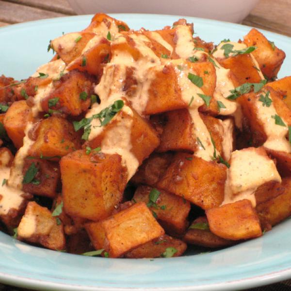

Papas Bravas

Patatas bravas, also known as patatas a la brava or papas bravas, are a typical preparation found in bars in Spain
consisting of potatoes cut into large cubes, fried in olive oil and seasoned with salsa brava, which is a spicy sauce.
Ingredients
- 3 pounds medium Yukon Gold potatoes, cut into 1-1/2-inch cubes (about 8 potatoes)
- 2 tablespoons olive oil
- 2 garlic cloves, minced
- 2 tablespoons smoked paprika
- 2 teaspoons garlic powder
- 1-1/2 teaspoons chili powder
- 1-1/2 teaspoons ground cumin
- 1/4 teaspoon salt
- 1/4 teaspoon crushed red pepper flakes
- 1/8 teaspoon pepper
Steps
- Preheat oven to 375°. Place potatoes in a Dutch oven; add water to cover. Bring to a boil. Reduce heat; cook, uncovered, 8-10 minutes or until just tender. Drain; pat dry with paper towels. Transfer potatoes to a mixing bowl. Toss potatoes in oil and minced garlic to coat evenly.
- Combine the paprika, garlic powder, chili powder, cumin, salt, pepper flakes and pepper; sprinkle over potatoes. Gently toss to coat. Transfer potatoes to 2 greased 15x10x1-in. baking pans, spreading into a single layer. Bake until crispy, about 25 minutes, stirring potatoes and rotating pans halfway through cooking.
- For aioli, combine ingredients until blended. Transfer potatoes to a serving platter; sprinkle with chives. Serve warm with aioli.